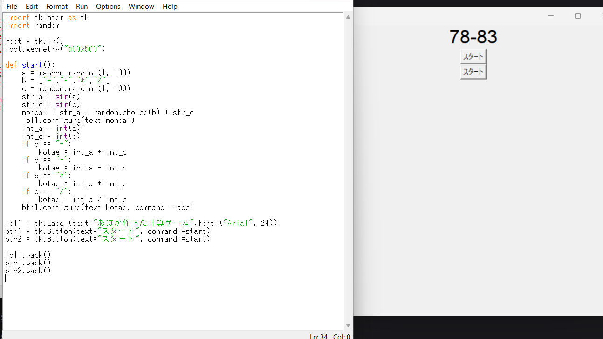
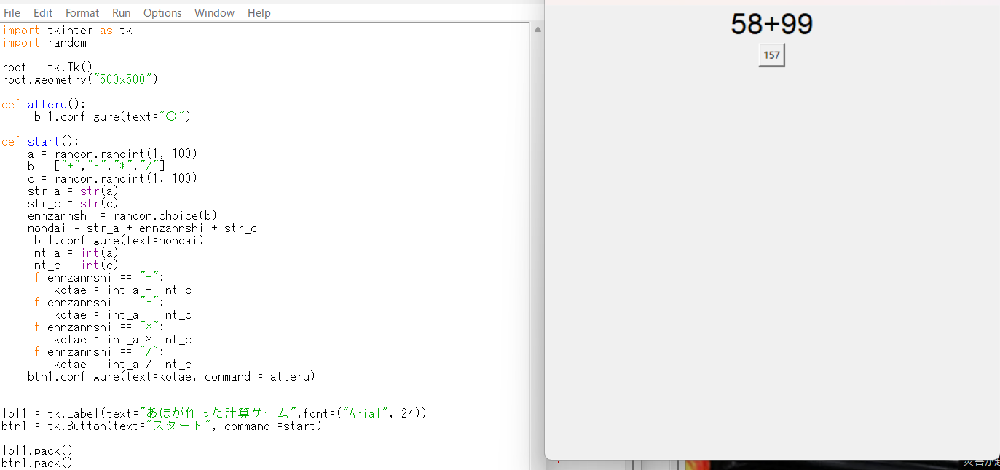
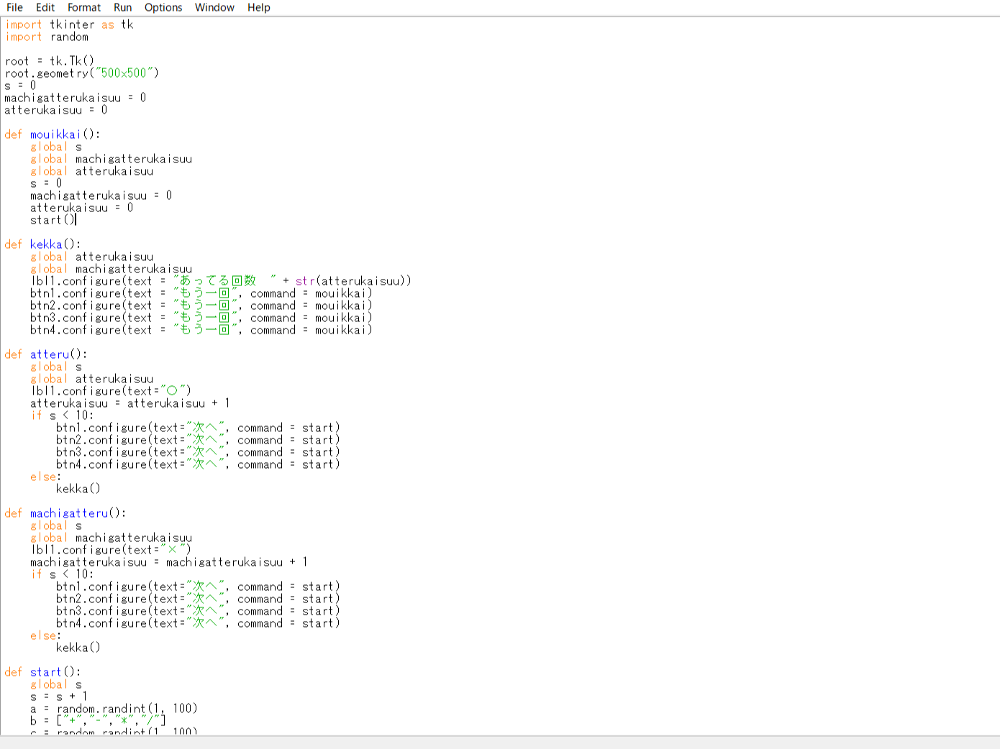
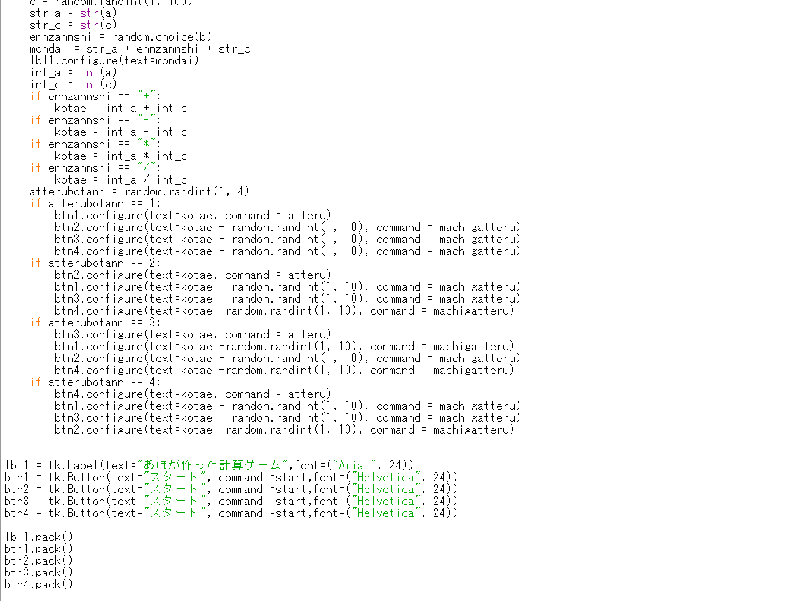

まず問題を表示させるようにしました。random.randint（ランダムに数字を出せる関数）などを使って計算される数や計算する数などを表示できるようになりました。
自分が出した問題の答えを出せるようにしました。int（文字から数字に変換する関数）などを使って答えを出せるようになりました
選択肢を出せるようにしました。正しい答えを何番目に出すか決めて、それ以外は出した答えにランダムで0~10までの数を足したり引いたりして足りして分からなくしました。
そして遂に完成しました。
 ※説明はzipファイルの中のREADME.txtの中に入っています。また、zipファイルを解凍してから使用してください。
OS:windows11 64bit版
プロセッサ:intel core i5
メモリ:8GB RAM
ストレージ:256GB